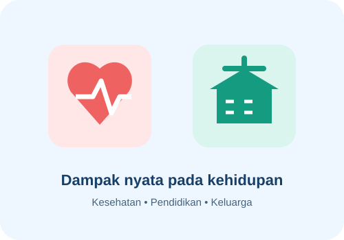

Empat dampak utama
- Kesehatan: mengganggu fungsi otak dan tubuh serta dapat menyebabkan ketergantungan.
- Pendidikan: mengurangi konsentrasi, mengganggu kehadiran, dan menurunkan prestasi belajar.
- Keluarga: dapat menimbulkan konflik, kekhawatiran, dan hilangnya kepercayaan.
- Masyarakat: dapat meningkatkan risiko masalah sosial dan kecelakaan.
Kesimpulan
Penyalahgunaan narkoba bukan hanya persoalan pribadi. Dukungan keluarga, sekolah, dan tenaga kesehatan penting untuk pencegahan dan pemulihan.